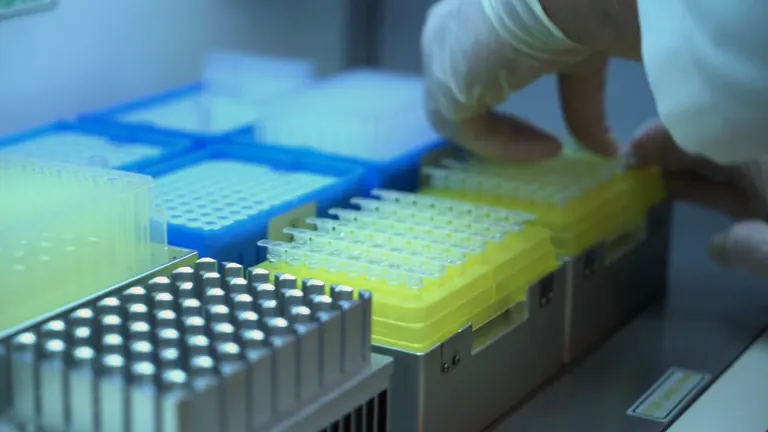

Validation
Validated by ICMR
LitLife™-SCA, our sickle cell anaemia test, is validated by the Indian Council of Medical Research.
Gloved hands load pipette tips at a laboratory workstation. A scientist in a lab coat pipettes into a dish on the bench. A tree stands over green paddy fields below a granite hill.
Illustrative footageLightening Lives is a healthcare technology company in Hyderabad. Our REASSURED genetic tests are simple, affordable and usable outside specialised laboratories.
Validation
LitLife™-SCA, our sickle cell anaemia test, is validated by the Indian Council of Medical Research.
Collaboration
An MOU with the Centre for Cellular and Molecular Biology, Hyderabad, covers developing and commercialising the sickle cell assay.
National programmes
Including the National Sickle Cell Anaemia Elimination Mission.

We develop genetic tests
Genetic tests have traditionally needed large equipment, specialised laboratories and trained staff, so they rarely reach the people who need them most. We start from where the test will be used: outside the specialised laboratory.
A published set of nine criteria for diagnostic tests that work in low-resource settings. It was introduced in 2019 as an update to the earlier ASSURED criteria.
Results can be read or shared digitally with decision-makers
Samples are simple and minimally invasive to collect
Affordable for the people tested and for the health system
Few false negatives
Few false positives
Simple to perform, with minimal training
Quick results; tests survive transport and storage without special conditions
No special equipment, or only simple devices
Reaches the people who need it most
for any inherited condition
We develop a REASSURED genetic test for the inherited condition your programme needs to screen for. These are the tests developed so far.
designed to reach every community
Our tests are supplied in bulk to institutions and government programmes, which take them to the people they serve.
Looking for a test for yourself or your family? We supply tests to institutions only. Please speak to your doctor or visit your nearest government health facility.
We also run awareness and counselling programmes, mostly on behalf of the government. Awareness programmes explain inherited conditions and screening to communities. Counselling helps people and families understand results and carrier status.
Ask about a programmeOur field work includes Nandurbar, Kothagudem and Jharkhand.


Explore a collaboration, request tests or ask about our awareness and counselling programmes. Order details are discussed per request, based on your institutional or regulatory requirements.
Or reach us directly: admin@lighteninglives.in +91 91825 88191